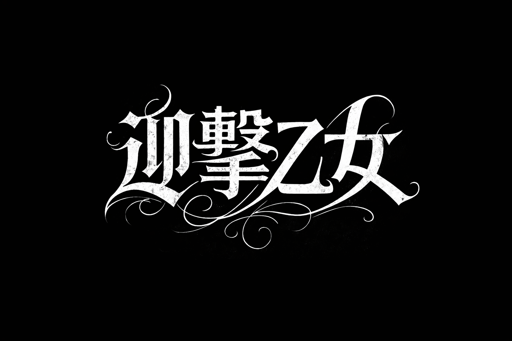

SCROLL ➔
Latest News
- 2026.06.05 RELEASE 1st Single「迎撃開始」サブスク解禁＆MV公開決定！
- 2026.06.01 LIVE 「迎撃ギグ Vol.1」チケット先行受付スタート
- 2026.05.20 MEDIA ストリート系音楽雑誌「LOUD SHOCK」にインタビュー掲載
Profile
2026年結成。激動の時代を撃ち抜くヘヴィサウンドと、叙情的なメロディを武器に活動するラウドロックバンド「迎撃乙女」。
圧倒的な轟音と、それに負けない強固な意志を宿したメッセージが、聴く者の心を迎撃する。
Discography
1st Single
迎撃開始
2026.06.05 Release
2026.06.05 Release